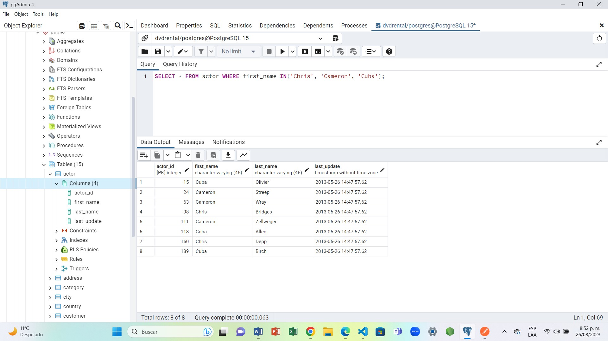

Ejercicio 5: Consultas SQL
1. Selecciona las columnas film_id y title de la tabla film
R: SELECT film_id, title FROM film;
2. Selecciona 5 filas de la tabla film, obteniendo todas las columnas.
R: SELECT * FROM film LIMT 5;
3. Selecciona filas de la tabla film donde film_id sea menor que 4.
R: SELECT * FROM film WHERE film_id < 4;
4. Selecciona filas de la tabla film donde el rating sea PG o G.
R: SELECT * FROM film WHERE rating = 'PG' OR rating ='G';
5. Selecciona filas de la tabla actor donde el nombre sea Angela, Angelina o Audrey usando IN.
R: SELECT * FROM actor WHERE first_name IN('Angela', 'Angelina', 'Audrey');
6. Obtén una lista de actores con el nombre Julia.
R: SELECT * FROM actor WHERE first_name = 'Julia';
7. Obtén una lista de actores con los nombres Chris, Cameron o Cuba.
R: SELECT * FROM actor WHERE first_name IN('Chris', 'Cameron', 'Cuba');

8. Selecciona la fila de la tabla customer para el cliente con el nombre Jamie Rice.
R: SELECT * FROM customer WHERE first_name = 'Jamie' AND last_name = 'Rice' ;

9. Selecciona el monto y la fecha de pago de la tabla payment donde el monto pagado sea menor a $1.
R: SELECT amount, payment_date FROM payment WHERE amount <= 1;
10. ¿Cuáles son las diferentes duraciones de alquiler permitidas por la tienda?
R: SELECT * FROM store;
11.Ordena las filas en la tabla city por country_id y luego por city.
R: SELECT * FROM city ORDER BY country_id, city;
12. ¿Cuáles son los ID de los últimos 3 clientes que devolvieron un alquiler?
R: SELECT rental_id, return_date FROM rental WHERE return_date IS NOT NULL
ORDER BY return_date DESC LIMIT 3;
13. ¿Cuántas películas tienen clasificación NC-17? ¿Cuántas tienen clasificación PG o PG-13?
R: SELECT rating, COUNT(rating) FROM film WHERE rating IN ('NC-17', 'PG', 'PG-13')
GROUP BY rating;
14. ¿Cuántos clientes diferentes tienen registros en la tabla rental?
R: SELECT COUNT (DISTINCT customer_id) FROM rental;
20. Selecciona los 10 actores que tienen los nombres más largos (nombre y apellido combinados). -->
R: SELECT first_name, last_name, LENGTH(first_name || last_name) AS len
FROM actor ORDER BY len DESC LIMIT 10;